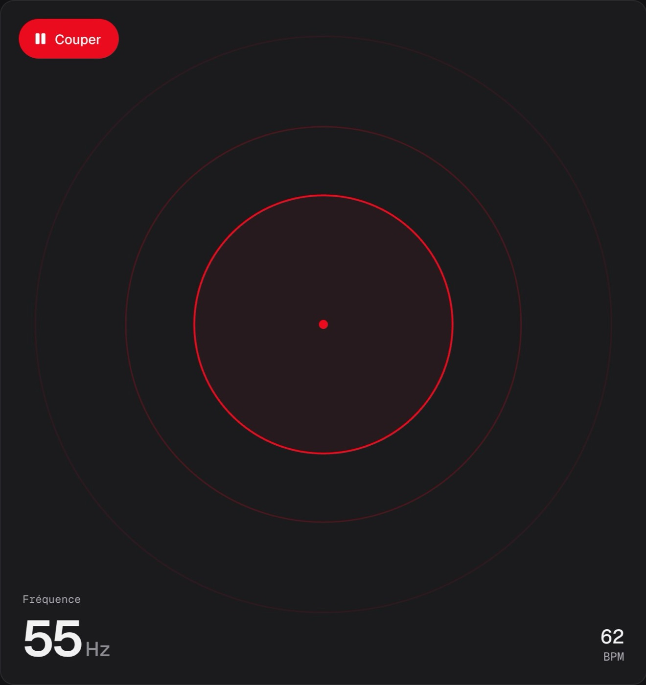
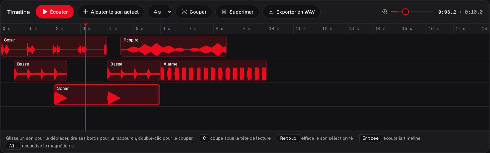

Un motpar jour.Une création.
Tout octobre, chaque mot devient un jeu, une animation, un outil ou un son, codé et publié le jour même.
31 jours.
31 mots.
Un mot par jour, de Pulse à Wake. Les jours publiés s'ouvrent, celui du jour est en rouge.
Publié
Aujourd'hui
À venir
Jour 01.
Pulse.
Un instrument qui bat, codé avec la Web Audio API, sans aucune librairie.

Générateur
De 20 Hz à 4 kHz, quatre formes d'onde, un battement réglable.

Timeline
Place, coupe et écoute tes sons sur quatre pistes.
Pads
8
sons à jouer au clavier, touches modifiables.
Bass boost
+24dB
avec un limiteur en sortie.
Ils codent
aussi.
Les dépôts publics marqués du topic devtober sur GitHub, avec leur propre description.
À ton
tour.
Crée un dépôt public avec un dossier par jour, ajoute le topic devtober, poste ta création avec #devtober.